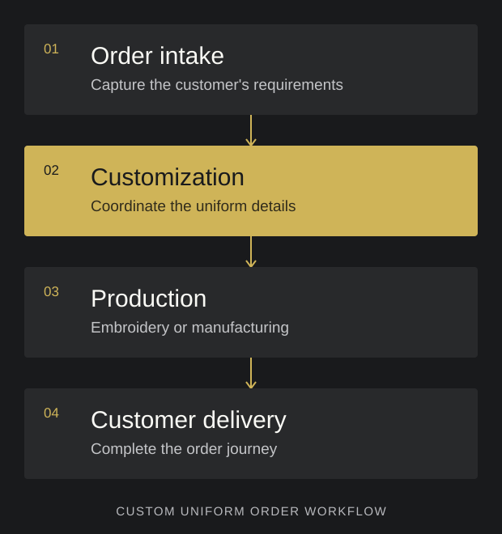

Custom orders.
Coordinated delivery.
I built a staff portal to manage custom uniform orders through the full journey: ordering, customization, coordination with embroiderers or manufacturers, and delivery to the customer.
- My role
- Software engineer
- Product
- Internal staff portal
- Focus
- Custom uniform order operations
The challenge
An order is
only the beginning.
A custom uniform order has several stages after the initial request. The customer's requirements need to carry through customization, production with an embroiderer or manufacturer, and the final delivery.
The staff portal brought that end-to-end process into one operational workflow, giving the project a broader scope than a customer-facing product page.
The order journey
From customer
requirements to
the finished uniform.
The portal supports the staff work that connects each stage. This illustration explains the workflow I built; it is not a screenshot of the private application.

Illustrated workflow · Internal staff portal
What I built
The operational
side of a
custom order.
- 01
Order intake and customization
Built the staff portal around the ordering process and the customer's uniform customization requirements, keeping those stages connected as part of the same order journey.
- 02
Production coordination
Extended the workflow to cover sending orders out to embroiderers or manufacturers, connecting the customization work with the people responsible for producing the uniforms.
- 03
Delivery to the customer
Included the final delivery stage in the portal's scope so the workflow followed the order through fulfillment, beyond the initial sale and production handoff.
Engineering perspective
Build around
the handoffs.
The central engineering challenge was connecting the stages of a real business process. Order intake, customization, production, and delivery each serve a different purpose, but they belong to one customer order.
This project demonstrates my work on internal software that supports the operations behind an e-commerce business, from the initial customer requirements through fulfillment.
Staff tooling · Custom orders · Production coordination · Fulfillment
Project context
The public storefront provides business context. My contribution described here is the internal staff portal for custom uniform orders.
Explore more work.
Software for operations, customer workflows, and applied AI.